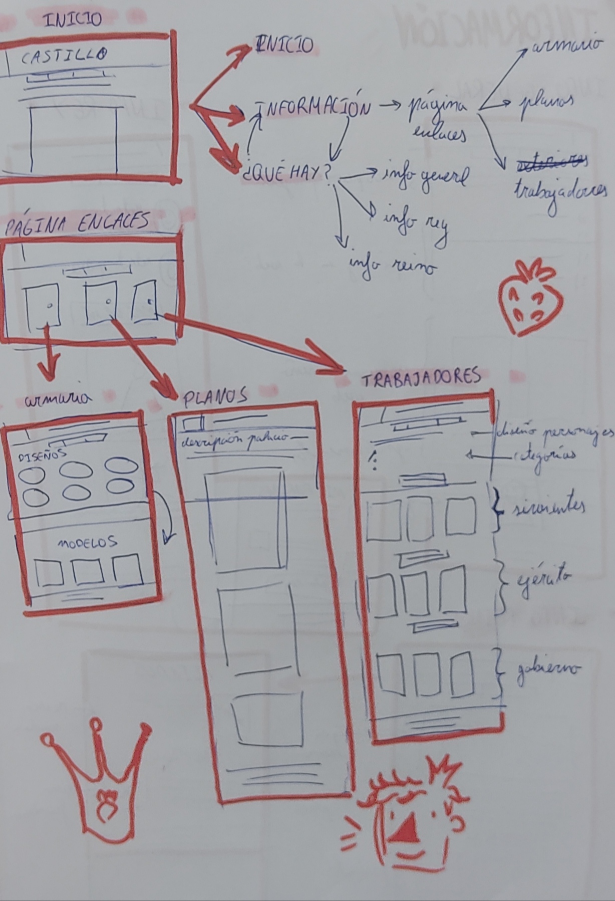

¿QUÉ ES ESTO?
Esta no es más que una página en la que he querido exponer los dibujos que he hecho relacionados con un personaje que me he inventado.
Es una especie de galería virtual que aparenta ser la página web informativa de un palacio.
En esta web podrás encontrar:
- Información del rey, su familia y sus deberes.
- Planos del palacio e instalaciones reales
- Información del Reino Fresa, así como sus rivales y aliados y sus potencias comerciales.
- La colección de vestuario real, que es de vital importancia para el reino.
- Información sobre los funcionarios del palacio y seguridad.
Esquemas del diseño de la página web:

Me hace mucha ilusión hacer esta web porque es una forma muy divertida de presentar mis dibujos, ideas, bocetos, etc y a la vez tenerlo organizado
para que se entienda bien. Muchas gracias por ver de parte del creador :D